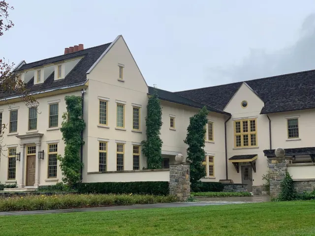
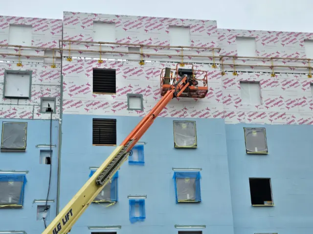

Home stucco projectsProyectos de estuco residencial
See Wallder Construction project photos, from stucco homes and masonry exteriors to exterior work in progress.Mira fotos de proyectos de Wallder Construction, con casas de estuco, exteriores de mampostería y trabajos en curso.
Project photosFotos de proyectos







Project recordRegistro de proyectos
- Maple Hill FarmMaple Hill Farm
- Fairfield, CTFairfield, CT
- Traditional stucco.Estuco tradicional.